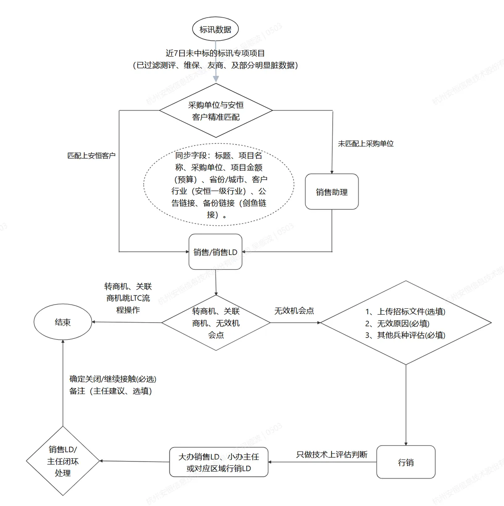
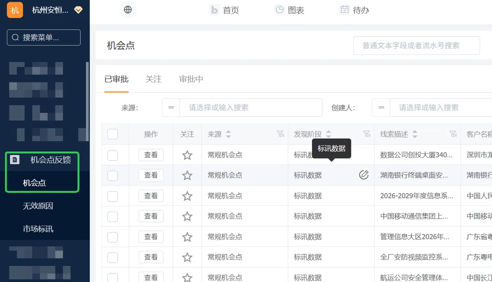
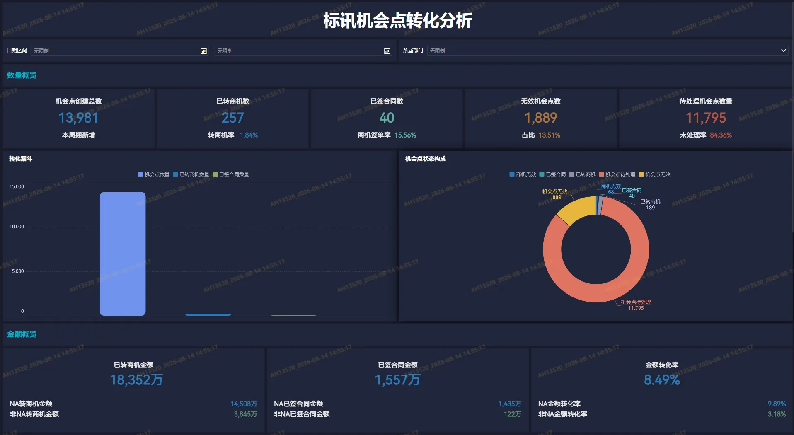
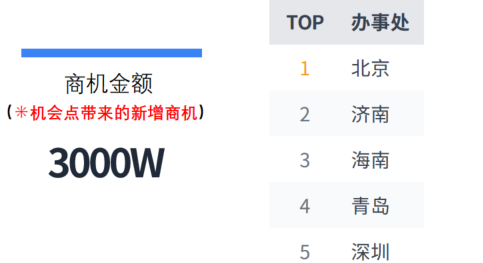
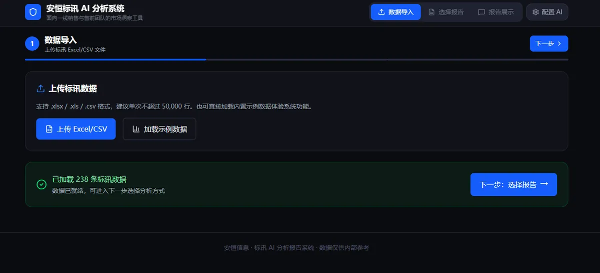
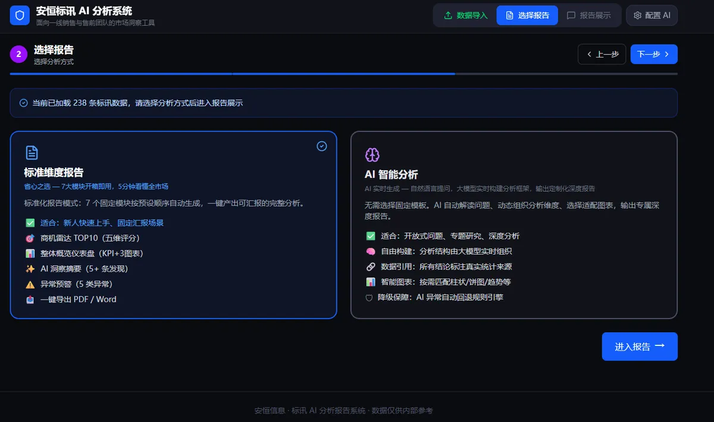

示例场景：某行业销售收到紧急需求，需要分析本区域金融、运营商行业近3年市场情况（地市/客户/中标方等多个维度）。
人工处理：寻求咨询厂商去购买相关数据，需整理、治理、分析数据至少花费半天时间或直接找咨询厂商付费获取分析报告
收到需求，怎么在2分钟内完成多维度安全市场分析（请看如下应用演示视频）
以往标讯数据的筛选、处理全部依赖人工，耗时费力。大量无关数据、非业务数据混杂，真正有价值的标讯很难快速找到；且标讯的管理未标准化、流程化导致需要花费大量的时间去维护、复盘等
完成标讯工作线上化、标准化升级，搭建完整线上处理流程：


| 数据治理 | 抽样时间 | 数量 | 质量 | |
|---|---|---|---|---|
| V1.0/5.6 | 大小模型治理数据后，NA客户推送对应全部标讯，非NA及未匹配推送专项标讯 | 5.06-5.17 | 全国约270/日（北分某销售：2条/日） | 60% |
| V2.0/6.6 | 如上基础，过滤NA客户的信息化标讯；过滤测评、友商维保等非我司业务数据 | 6.06-6.17 | 全国约200/日（北分某销售：1条/日） | 95% |
| V3.0/7.26 | 如上基础，梳理及分析400+反馈无效的原因，过滤身份认证、信创改造、网络基础设施等产品类数据 | 7.26-7.31 | 全国约170/日（北分某销售：3条/周） | 96% |


需要定期撰写市场研判报告，数据收集分散、格式不统一、撰写耗时，难以保持报告质量的一致性，还容易因数据不全导致判断失准。
这份智能化报告（1年2次），为大家开展客户精细化运营、区域市场态势研判提供全面数据支撑：
1.为了充分利用好标讯数据，进行市场空间分析、标讯运营等;2.是为了支持用户个性化，综合管理部利用Workbuddy等AI工具，研发AI分析平台，供大家使用，也可随时交流AI工具研发方法，用户自主进行个性化平台建设。
平台提供两大分析能力：

